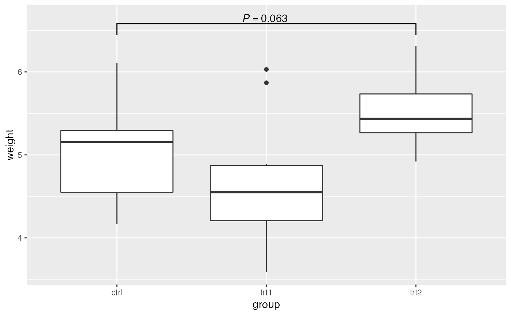

Add p-values to ggplot objects.
add_pval( ggplot_obj, pairs = NULL, test = "wilcox.test", heights = NULL, barheight = NULL, textsize = 5, pval_text_adj = NULL, annotation = NULL, log = FALSE, pval_star = FALSE, plotly = FALSE, fold_change = FALSE, parse_text = NULL, response = "infer", ... )
| ggplot_obj | ggplot object |
|---|---|
| pairs | a list pairs of comparison. Groups indicated by integer numbers counted from left to right. e.g. list(c(1, 2), c(2, 3)) will compare first group with second, second group with third |
| test | character of statistical testing method. e.g. t.test, wilcox.test. Default wilcox.test |
| heights | integer or vector of integers. The heights of the p-value/annotation. Default maximum value from the data |
| barheight | tip bar height of the annotation. Default calculated by range_y / 20 |
| textsize | p-value/annotation text size |
| pval_text_adj | distance of p-value/annotation from annotation bar. Default barheight/2 |
| annotation | text to annotate. If specified, statistical test will not be done |
| log | whether y axis is log transformed. Default FALSE |
| pval_star | whether transform pval numbers to stars |
| plotly | set to TRUE if wrap the plot with `ggploty` |
| fold_change | whether also compute and show fold changes. Default FALSE. |
| parse_text | whether parse the annotation text (NULL, TRUE, FALSE). If NULL, p-values will be parsed, text annotations will not. Default NULL. |
| response | the column that contains the data for statistical testing. Default infer from ggplot object. |
| ... | additional arguments for statistical testing function (e.g. alternative = "less"). |
library(ggplot2) library(ggpval) data("PlantGrowth") plt <- ggplot(PlantGrowth, aes(group, weight)) + geom_boxplot() add_pval(plt, pairs = list(c(1, 3)), test='wilcox.test')